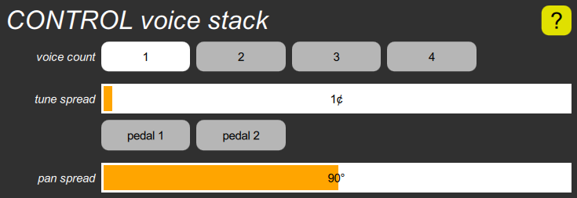

CONTROL voice stack cluster

This cluster allows multiple voices to be played for each note. The voice count parameter specifies the number of voices, up to four. All voices have the same sound, but the following parameters introduce differences; they have no effect if the Voice count is one.
The tune spread parameter causes the voices to be detuned. This is a half-scale detuning, in which the beat frequency doubles for each two-octave increase in pitch. The range is zero to 50¢, with a default value of 1¢ so that the instrument doesn’t sound completely dry. However, there are two special values at the high end of range, which connect this parameter to either pedal. You can quickly set either of these values with the buttons below the slider.
The pan spread parameter causes the voices to be spread out across the pan range. At zero, it does nothing, and all voices are controlled by the same Pan parameters so have the same position. At 45° (the default), the pan range is cut in half, so that when two voices are assigned to the same note, the first can be panned from left to center (centered around –45°) and the second can be panned from center to right (centered around +45°). 90° forces one voice all the way to the left and the other all the way to the right, no matter what the Pan parameters say.